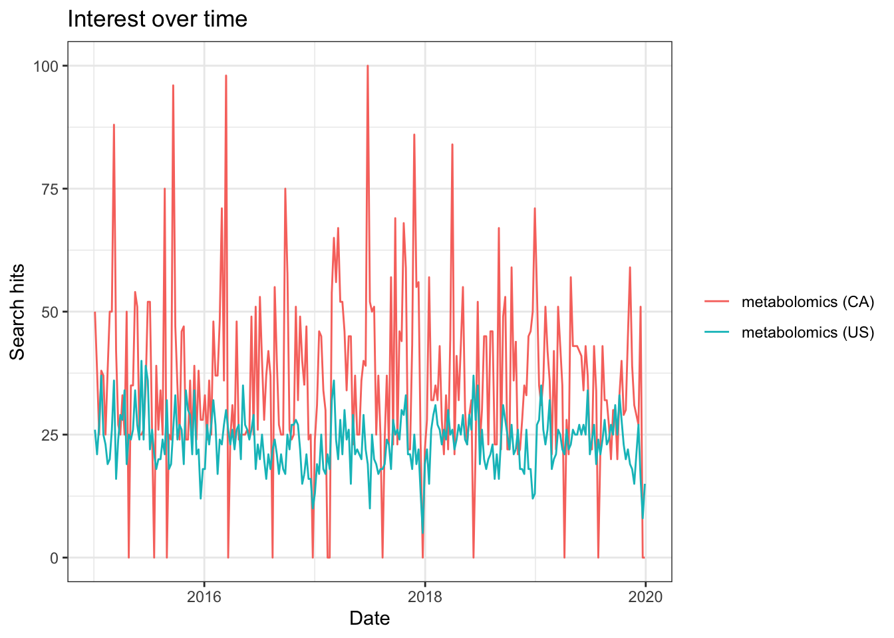
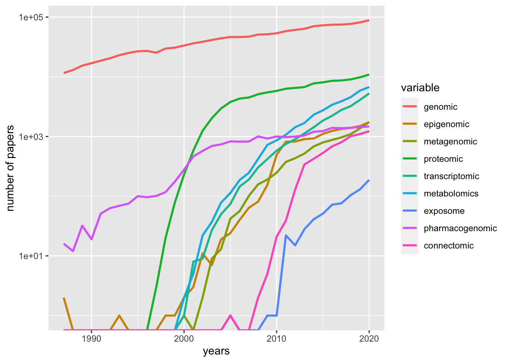

Chapter 1 Introduction
Information in living organism commuicates along the Genomics, Transcriptomics, Proteomics and Metabolomics in Central dogma. Following such stream, we might answer certain problems in different scales from individual, population, community to ecosystem. Metabolomics (i.e., the profiling and quantitation of metabolites in body fluids) is a relatively new field of “omics” studies. Different from other omics studies, metabolomics always focused on small moleculars with much lower mass than polypeptide with single or doubled charged ions. Here is a demo of the position of metabolomics in “omics” studies(B. Dunn et al. 2011).

Figure 1.1: The complex interactions of functional levels in biological systems.
Metabolomics studies are always performed in GC-MS(Theodoridis et al. 2012), GC*GC-MS(Tian et al. 2016), LC-MS(Gika et al. 2014), LC-MS/MS(Begou et al. 2017) or NMR(Zhang et al. 2012; B. Dunn et al. 2011). This workflow would only cover mass spectrometry based metabolomics or XC-MS based research.
1.1 History
1.1.1 History of Mass Spectrometry
- 1913, Sir Joseph John Thomson “Rays of Positive Electricity and Their Application to Chemical Analyses.”
Figure 1.2: Sir Joseph John Thomson “Rays of Positive Electricity and Their Application to Chemical Analyses.”
Petroleum industry bring mass spectrometry from physics to chemistry
The first commercial mass spectrometer is from Consolidated Engineering Corp to analysis simple gas mixtures from petroleum
In World War II, U.S. use mass spectrometer to separate and enrich isotopes of uranium in Manhattan Project
U.S. also use mass spectrometer for organic compounds during wartime and extend the application of mass spectrometer
1946, TOF, William E. Stephens
1970s, quadrupole mass analyzer
1970s, R. Graham Cooks developed mass-analyzed ion kinetic energy spectrometry, or MIKES to make MRM analysis for multi-stage mass sepctrometry
1980s, MALDI rescue TOF and mass spectrometry move into biological application
1990s, Orbitrap mass spectrometry
2010s, Aperture Coding mass spectrometry
1.1.2 History of Metabolomcis
According to this book section(Kusonmano, Vongsangnak, and Chumnanpuen 2016):

Figure 1.3: Metabolomics timeline during pre- and post-metabolomics era
2000-1500 BC some traditional Chinese doctors who began to evaluate the glucose level in urine of diabetic patients using ants
300 BC ancient Egypt and Greece that traditionally determine the urine taste to diagnose human diseases
1913 Joseph John Thomson and Francis William Aston mass spectrometry
1946 Felix Bloch and Edward Purcell Nuclear magnetic resonance
late 1960s chromatographic separation technique
1971 Pauling’s research team “Quantitative Analysis of Urine Vapor and Breath by Gas–Liquid Partition Chromatography”
Willmitzer and his research team pioneer group in metabolomics which suggested the promotion of the metabolomics field and its potential applications from agriculture to medicine and other related areas in the biological sciences
2007 Human Metabolome Project consists of databases of approximately 2500 metabolites, 1200 drugs, and 3500 food components
post-metabolomics era high-throughput analytical techniques
1.1.3 Defination
Metabolomics is actually a comprehensive analysis with identification and quantification of both known and unknown compounds in an unbiased way. Metabolic fingerprinting is working on fast classification of samples based on metabolite data without quantifying or identification of the metabolites. Metabolite profiling always need a pre-defined metabolites to be quantification.(Madsen, Lundstedt, and Trygg 2010)
1.2 Reviews and tutorials
Some nice reviews and tutorials related to this workflow could be found in those papers or directly online:
1.2.1 Workflow
Those papers are recommended(Barnes et al. 2016a; Cajka and Fiehn 2016; X. Lu and Xu 2008; Fiehn 2002) for general metabolomics related topics. For targeted metaabolomics, you could check those reviews(Begou et al. 2017; Zhou and Yin 2016; W. Lu, Bennett, and Rabinowitz 2008; Weljie et al. 2006; Yuan et al. 2012; Griffiths et al. 2010).
1.2.2 Data analysis
You could firstly read those papers(Barnes et al. 2016b; Alonso, Marsal, and Julià 2015; Kusonmano, Vongsangnak, and Chumnanpuen 2016; Madsen, Lundstedt, and Trygg 2010; Uppal et al. 2016) to get the concepts and issues for data analysis in metabolomics. Then this paper(Gromski et al. 2015) could be treated as a step-by-step tutorial.
For annotation, this paper(Domingo-Almenara et al. 2018) is an well organized review.
- For database used in metabolomics, you could check this review(Vinaixa et al. 2016).
For metabolomics software, check this series of reviews for each year(Misra and family=Hooft 2016; Misra, Fahrmann, and Grapov 2017; Misra 2018).
For open sourced software, this review(Spicer et al. 2017) could be a good start.
For DIA or DDA metabolomics, check those papers(Bilbao et al. 2015; Fenaille et al. 2017).
Here is the slides for metabolomics data analysis workshop and I have made presentations twice in UWaterloo and UC Irvine. Such slides would be updated silent.
1.2.3 Application
For environmental research related metabolomics or exposome, check those papers(Bundy, Davey, and Viant 2009; Warth et al. 2017).
For food chemistry, check this(Castro-Puyana et al. 2017) and this paper for livestock(Goldansaz et al. 2017) and those one for nutrients(Allam-Ndoul et al. 2016; Jones, Park, and Ziegler 2012)
For disease related metabolomics such as oncology(Spratlin, Serkova, and Eckhardt 2009; Tumas et al. 2016), ophthalmology(Tan et al. 2016), Cardiovascular(Cheng et al. 2017) and chronic kidney disease(Hocher and Adamski 2017), check those papers.
Check this piece(Wishart 2016) for drug discovery and precision medicine
The object could be plant(Jorge, Mata, and António 2016; Sumner, Mendes, and Dixon 2003), microbial and mammalian(Kapoore and Vaidyanathan 2016), brain(Gonzalez-Riano, Garcia, and Barbas 2016), human gut microbiota(Smirnov et al. 2016).
For single cell metabolomics analysis, check here(Fessenden 2016; Zenobi 2013).
1.2.4 Challenge
High throughput Metabolomics related issues could be found here (Zampieri et al. 2017). - Cohort size - Temporal resolution - Spatial resolution
Quantitative Metabolomics related issues could be found here(Kapoore and Vaidyanathan 2016; Jorge, Mata, and António 2016).
For quality control issues, check here(Dudzik et al. 2018; Siskos et al. 2017).
1.3 Trends in Metabolomics
library(gtrendsR)
res <- gtrends(c("metabolomics", "metabolomics"), geo = c("CA","US"))
plot(res)
library(rentrez)
papers_by_year <- function(years, search_term){
return(sapply(years, function(y) entrez_search(db="pubmed",term=search_term, mindate=y, maxdate=y, retmax=0)$count))
}
years <- 1987:2018
total_papers <- papers_by_year(years, "")
omics <- c("genomic", "epigenomic", "metagenomic", "proteomic", "transcriptomic","metabolomics","exposome", "pharmacogenomic", "connectomic")
trend_data <- sapply(omics, function(t) papers_by_year(years, t))
trend_props <- trend_data/total_papers
library(reshape)
library(ggplot2)
trend_df <- melt(data.frame(years, trend_data), id.vars="years")
p <- ggplot(trend_df, aes(years, value, colour=variable))
p + geom_line(size=1) + scale_y_log10("number of papers")## Warning: Transformation introduced infinite values in continuous y-axis
1.4 Workflow
References
B. Dunn, Warwick, David I. Broadhurst, Helen J. Atherton, Royston Goodacre, and Julian L. Griffin. 2011. “Systems Level Studies of Mammalian Metabolomes: The Roles of Mass Spectrometry and Nuclear Magnetic Resonance Spectroscopy.” Chem. Soc. Rev. 40 (1): 387–426. https://doi.org/10.1039/B906712B.
Theodoridis, Georgios A., Helen G. Gika, Elizabeth J. Want, and Ian D. Wilson. 2012. “Liquid ChromatographyMass Spectrometry Based Global Metabolite Profiling: A Review.” Analytica Chimica Acta 711 (January): 7–16. https://doi.org/10.1016/j.aca.2011.09.042.
Tian, Tze-Feng, San-Yuan Wang, Tien-Chueh Kuo, Cheng-En Tan, Guan-Yuan Chen, Ching-Hua Kuo, Chi-Hsin Sally Chen, Chang-Chuan Chan, Olivia A. Lin, and Y. Jane Tseng. 2016. “Web Server for Peak Detection, Baseline Correction, and Alignment in Two-Dimensional Gas Chromatography Mass Spectrometry-Based Metabolomics Data.” Anal. Chem. 88 (21): 10395–10403. https://doi.org/10.1021/acs.analchem.6b00755.
Gika, Helen G., Georgios A. Theodoridis, Robert S. Plumb, and Ian D. Wilson. 2014. “Current Practice of Liquid ChromatographyMass Spectrometry in Metabolomics and Metabonomics.” Journal of Pharmaceutical and Biomedical Analysis, Review papers on pharmaceutical and biomedical analysis 2013, 87 (January): 12–25. https://doi.org/10.1016/j.jpba.2013.06.032.
Begou, O., H. G. Gika, I. D. Wilson, and G. Theodoridis. 2017. “Hyphenated MS-Based Targeted Approaches in Metabolomics.” Analyst 142 (17): 3079–3100. https://doi.org/10.1039/C7AN00812K.
Zhang, Aihua, Hui Sun, Ping Wang, Ying Han, and Xijun Wang. 2012. “Modern Analytical Techniques in Metabolomics Analysis.” The Analyst 137 (2): 293–300. https://doi.org/10.1039/C1AN15605E.
Kusonmano, Kanthida, Wanwipa Vongsangnak, and Pramote Chumnanpuen. 2016. “Informatics for Metabolomics.” In Translational Biomedical Informatics, 91–115. Advances in Experimental Medicine and Biology. Springer, Singapore. https://doi.org/10.1007/978-981-10-1503-8_5.
Madsen, Rasmus, Torbjörn Lundstedt, and Johan Trygg. 2010. “Chemometrics in MetabolomicsA Review in Human Disease Diagnosis.” Analytica Chimica Acta 659 (1): 23–33. https://doi.org/10.1016/j.aca.2009.11.042.
Barnes, Stephen, H. Paul Benton, Krista Casazza, Sara J. Cooper, Xiangqin Cui, Xiuxia Du, Jeffrey Engler, et al. 2016a. “Training in Metabolomics Research. I. Designing the Experiment, Collecting and Extracting Samples and Generating Metabolomics Data.” J. Mass Spectrom. 51 (7): 461–75. https://doi.org/10.1002/jms.3782.
Cajka, Tomas, and Oliver Fiehn. 2016. “Toward Merging Untargeted and Targeted Methods in Mass Spectrometry-Based Metabolomics and Lipidomics.” Anal. Chem. 88 (1): 524–45. https://doi.org/10.1021/acs.analchem.5b04491.
Lu, Xin, and Guowang Xu. 2008. “LC-MS Metabonomics Methodology in Biomarker Discovery.” In Biomarker Methods in Drug Discovery and Development, edited by Feng Wang, 291–315. Methods in Pharmacology and Toxicology. Humana Press. https://doi.org/10.1007/978-1-59745-463-6_14.
Fiehn, Oliver. 2002. “Metabolomics the Link Between Genotypes and Phenotypes.” Plant Mol Biol 48 (1): 155–71. https://doi.org/10.1023/A:1013713905833.
Zhou, Juntuo, and Yuxin Yin. 2016. “Strategies for Large-Scale Targeted Metabolomics Quantification by Liquid Chromatography-Mass Spectrometry.” Analyst 141 (23): 6362–73. https://doi.org/10.1039/C6AN01753C.
Lu, Wenyun, Bryson D. Bennett, and Joshua D. Rabinowitz. 2008. “Analytical Strategies for LCMS-Based Targeted Metabolomics.” Journal of Chromatography B, Hyphenated techniques for global metabolite profiling, 871 (2): 236–42. https://doi.org/10.1016/j.jchromb.2008.04.031.
Weljie, Aalim M., Jack Newton, Pascal Mercier, Erin Carlson, and Carolyn M. Slupsky. 2006. “Targeted Profiling: Quantitative Analysis of 1H NMR Metabolomics Data.” Anal. Chem. 78 (13): 4430–42. https://doi.org/10.1021/ac060209g.
Yuan, Min, Susanne B. Breitkopf, Xuemei Yang, and John M. Asara. 2012. “A Positive/Negative IonSwitching, Targeted Mass SpectrometryBased Metabolomics Platform for Bodily Fluids, Cells, and Fresh and Fixed Tissue.” Nat. Protoc. 7 (5): 872–81. https://doi.org/10.1038/nprot.2012.024.
Griffiths, William J., Therese Koal, Yuqin Wang, Matthias Kohl, David P. Enot, and Hans-Peter Deigner. 2010. “Targeted Metabolomics for Biomarker Discovery.” Angew. Chem. Int. Ed. 49 (32): 5426–45. https://doi.org/10.1002/anie.200905579.
Barnes, Stephen, H. 2016b. “Training in Metabolomics Research. II. Processing and Statistical Analysis of Metabolomics Data, Metabolite Identification, Pathway Analysis, Applications of Metabolomics and Its Future.” J. Mass Spectrom. 51 (8): 535–48. https://doi.org/10.1002/jms.3780.
Alonso, Arnald, Sara Marsal, and Antonio Julià. 2015. “Analytical Methods in Untargeted Metabolomics: State of the Art in 2015.” Front Bioeng Biotechnol 3 (March). https://doi.org/10.3389/fbioe.2015.00023.
Uppal, Karan, Douglas I. Walker, Ken Liu, Shuzhao Li, Young-Mi Go, and Dean P. Jones. 2016. “Computational Metabolomics: A Framework for the Million Metabolome.” Chem. Res. Toxicol. 29 (12): 1956–75. https://doi.org/10.1021/acs.chemrestox.6b00179.
Gromski, Piotr S., Howbeer Muhamadali, David I. Ellis, Yun Xu, Elon Correa, Michael L. Turner, and Royston Goodacre. 2015. “A Tutorial Review: Metabolomics and Partial Least Squares-Discriminant Analysis a Marriage of Convenience or a Shotgun Wedding.” Analytica Chimica Acta 879 (June): 10–23. https://doi.org/10.1016/j.aca.2015.02.012.
Domingo-Almenara, Xavier, J. Rafael Montenegro-Burke, H. Paul Benton, and Gary Siuzdak. 2018. “Annotation: A Computational Solution for Streamlining Metabolomics Analysis.” Anal. Chem. 90 (1): 480–89. https://doi.org/10.1021/acs.analchem.7b03929.
Vinaixa, Maria, Emma L. Schymanski, Steffen Neumann, Miriam Navarro, Reza M. Salek, and Oscar Yanes. 2016. “Mass Spectral Databases for LC/MS- and GC/MS-Based Metabolomics: State of the Field and Future Prospects.” TrAC Trends in Analytical Chemistry 78 (April): 23–35. https://doi.org/10.1016/j.trac.2015.09.005.
Misra, Biswapriya B., and prefix=van der family=Hooft given=Justin J. J. 2016. “Updates in Metabolomics Tools and Resources: 20142015.” ELECTROPHORESIS 37 (1): 86–110. https://doi.org/10.1002/elps.201500417.
Misra, Biswapriya B., Johannes F. Fahrmann, and Dmitry Grapov. 2017. “Review of Emerging Metabolomic Tools and Resources: 20152016.” ELECTROPHORESIS 38 (18): 2257–74. https://doi.org/10.1002/elps.201700110.
Misra, Biswapriya B. 2018. “New Tools and Resources in Metabolomics: 20162017.” ELECTROPHORESIS 39 (7): 909–23. https://doi.org/10.1002/elps.201700441.
Spicer, Rachel, Reza M. Salek, Pablo Moreno, Daniel Cañueto, and Christoph Steinbeck. 2017. “Navigating Freely-Available Software Tools for Metabolomics Analysis.” Metabolomics 13 (9). https://doi.org/10.1007/s11306-017-1242-7.
Bilbao, Aivett, Emmanuel Varesio, Jeremy Luban, Caterina Strambio-De-Castillia, Gérard Hopfgartner, Markus Müller, and Frédérique Lisacek. 2015. “Processing Strategies and Software Solutions for Data-Independent Acquisition in Mass Spectrometry.” PROTEOMICS 15 (5-6): 964–80. https://doi.org/10.1002/pmic.201400323.
Fenaille, François, Pierre Barbier Saint-Hilaire, Kathleen Rousseau, and Christophe Junot. 2017. “Data Acquisition Workflows in Liquid Chromatography Coupled to High Resolution Mass Spectrometry-Based Metabolomics: Where Do We Stand?” Journal of Chromatography A 1526 (Supplement C): 1–12. https://doi.org/10.1016/j.chroma.2017.10.043.
Bundy, Jacob G., Matthew P. Davey, and Mark R. Viant. 2009. “Environmental Metabolomics: A Critical Review and Future Perspectives.” Metabolomics 5 (1): 3. https://doi.org/10.1007/s11306-008-0152-0.
Warth, Benedikt, Scott Spangler, Mingliang Fang, Caroline H. Johnson, Erica M. Forsberg, Ana Granados, Richard L. Martin, et al. 2017. “Exposome-Scale Investigations Guided by Global Metabolomics, Pathway Analysis, and Cognitive Computing.” Anal. Chem. 89 (21): 11505–13. https://doi.org/10.1021/acs.analchem.7b02759.
Castro-Puyana, María, Raquel Pérez-Míguez, Lidia Montero, and Miguel Herrero. 2017. “Application of Mass Spectrometry-Based Metabolomics Approaches for Food Safety, Quality and Traceability.” TrAC Trends in Analytical Chemistry 93 (August): 102–18. https://doi.org/10.1016/j.trac.2017.05.004.
Goldansaz, Seyed Ali, An Chi Guo, Tanvir Sajed, Michael A. Steele, Graham S. Plastow, and David S. Wishart. 2017. “Livestock Metabolomics and the Livestock Metabolome: A Systematic Review.” PLOS ONE 12 (5): e0177675. https://doi.org/10.1371/journal.pone.0177675.
Allam-Ndoul, Bénédicte, Frédéric Guénard, Véronique Garneau, Hubert Cormier, Olivier Barbier, Louis Pérusse, and Marie-Claude Vohl. 2016. “Association Between Metabolite Profiles, Metabolic Syndrome and Obesity Status.” Nutrients 8 (6): 324. https://doi.org/10.3390/nu8060324.
Jones, Dean P., Youngja Park, and Thomas R. Ziegler. 2012. “Nutritional Metabolomics: Progress in Addressing Complexity in Diet and Health.” Annu. Rev. Nutr. 32 (1): 183–202. https://doi.org/10.1146/annurev-nutr-072610-145159.
Spratlin, Jennifer L., Natalie J. Serkova, and S. Gail Eckhardt. 2009. “Clinical Applications of Metabolomics in Oncology: A Review.” Clin Cancer Res 15 (2): 431–40. https://doi.org/10.1158/1078-0432.CCR-08-1059.
Tumas, Jaroslav, Kotryna Kvederaviciute, Marius Petrulionis, Benediktas Kurlinkus, Arnas Rimkus, Greta Sakalauskaite, Jonas Cicenas, and Audrius Sileikis. 2016. “Metabolomics in Pancreatic Cancer Biomarkers Research.” Med Oncol 33 (12): 133. https://doi.org/10.1007/s12032-016-0853-6.
Tan, S. Z., P. Begley, G. Mullard, K. A. Hollywood, and P. N. Bishop. 2016. “Introduction to Metabolomics and Its Applications in Ophthalmology.” Eye 30 (6): 773–83. https://doi.org/10.1038/eye.2016.37.
Cheng, Susan, Svati H. Shah, Elizabeth J. Corwin, Oliver Fiehn, Robert L. Fitzgerald, Robert E. Gerszten, Thomas Illig, et al. 2017. “Potential Impact and Study Considerations of Metabolomics in Cardiovascular Health and Disease: A Scientific Statement from the American Heart Association.” Circ. Cardiovasc. Genet. 10 (2): e000032. https://doi.org/10.1161/HCG.0000000000000032.
Hocher, Berthold, and Jerzy Adamski. 2017. “Metabolomics for Clinical Use and Research in Chronic Kidney Disease.” Nat. Rev. Nephrol. 13 (5): 269–84. https://doi.org/10.1038/nrneph.2017.30.
Wishart, David S. 2016. “Emerging Applications of Metabolomics in Drug Discovery and Precision Medicine.” Nat Rev Drug Discov 15 (7): 473–84. https://doi.org/10.1038/nrd.2016.32.
Jorge, Tiago F., Ana T. Mata, and Carla António. 2016. “Mass Spectrometry as a Quantitative Tool in Plant Metabolomics.” Phil. Trans. R. Soc. A 374 (2079): 20150370. https://doi.org/10.1098/rsta.2015.0370.
Sumner, Lloyd W, Pedro Mendes, and Richard A Dixon. 2003. “Plant Metabolomics: Large-Scale Phytochemistry in the Functional Genomics Era.” Phytochemistry, Plant metabolomics, 62 (6): 817–36. https://doi.org/10.1016/S0031-9422(02)00708-2.
Kapoore, Rahul Vijay, and Seetharaman Vaidyanathan. 2016. “Towards Quantitative Mass Spectrometry-Based Metabolomics in Microbial and Mammalian Systems.” Phil. Trans. R. Soc. A 374 (2079): 20150363. https://doi.org/10.1098/rsta.2015.0363.
Gonzalez-Riano, Carolina, Antonia Garcia, and Coral Barbas. 2016. “Metabolomics Studies in Brain Tissue: A Review.” Journal of Pharmaceutical and Biomedical Analysis, Review issue 2016, 130 (October): 141–68. https://doi.org/10.1016/j.jpba.2016.07.008.
Smirnov, Kirill S., Tanja V. Maier, Alesia Walker, Silke S. Heinzmann, Sara Forcisi, Inés Martinez, Jens Walter, and Philippe Schmitt-Kopplin. 2016. “Challenges of Metabolomics in Human Gut Microbiota Research.” International Journal of Medical Microbiology, Intestinal microbiota - a microbial ecosystem at the edge between immune homeostasis and inflammation, 306 (5): 266–79. https://doi.org/10.1016/j.ijmm.2016.03.006.
Fessenden, Marissa. 2016. “Metabolomics: Small Molecules, Single Cells.” Nature 540 (7631): 153–55. https://doi.org/10.1038/540153a.
Zenobi, R. 2013. “Single-Cell Metabolomics: Analytical and Biological Perspectives.” Science 342 (6163): 1243259. https://doi.org/10.1126/science.1243259.
Zampieri, Mattia, Karthik Sekar, Nicola Zamboni, and Uwe Sauer. 2017. “Frontiers of High-Throughput Metabolomics.” Current Opinion in Chemical Biology, Omics, 36 (February): 15–23. https://doi.org/10.1016/j.cbpa.2016.12.006.
Dudzik, Danuta, Cecilia Barbas-Bernardos, Antonia García, and Coral Barbas. 2018. “Quality Assurance Procedures for Mass Spectrometry Untargeted Metabolomics. A Review.” Journal of Pharmaceutical and Biomedical Analysis, Review issue 2017, 147 (January): 149–73. https://doi.org/10.1016/j.jpba.2017.07.044.
Siskos, Alexandros P., Pooja Jain, Werner Römisch-Margl, Mark Bennett, David Achaintre, Yasmin Asad, Luke Marney, et al. 2017. “Interlaboratory Reproducibility of a Targeted Metabolomics Platform for Analysis of Human Serum and Plasma.” Anal. Chem. 89 (1): 656–65. https://doi.org/10.1021/acs.analchem.6b02930.